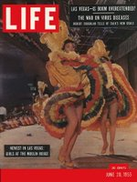
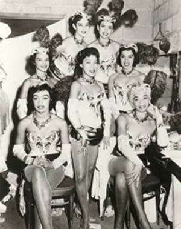

History |
|---|
| Home | The story behind the Moulin Rouge Hotel and Casino is almost stranger than fiction. The Moulin Rouge Hotel and Casino opened in Las Vegas in May of 1955 amidst much anticipation and just as much speculation. The Moulin Rouge Hotel and Casino became the first interracial hotel and casino in the history of Las Vegas. It opened to such a wonderful reception by the public, virtually taking all of the "after midnight" business away from the other big name casinos who were located on the strip (now referred to as downtown Las Vegas). The Moulin Rouge Hotel and Casino boasted an all-star event opening in May of 1955 hosted by part club owner, boxing champion Joe Louis. Frank Sinatra and Sammy Davis Jr. of the famed Rat Pack attended the opening night festivities. The french Can-Can inspired club quickly grew in popularity and had to add an extra show in its theater at 3am because patronage called for it. Though blacks such as Sammy Davis Jr. were allowed to sing with the likes of Frank Sinatra and Dean Martin at strip hotels, the Moulin Rouge was the only gaming outlet in Las Vegas that allowed blacks and minorities on the casino floor and was also the only hotel and casino that allowed blacks the opportunity to stay in any of its 100 guest rooms. Before the Moulin Rouge existed black performers were forced to enter venues through service entrances had to stay in black boarding facilities. |
 Photo from Life Magazine |
|---|---|---|
| Star Power | ||
| History | ||
| Historical Landmark | ||
| Owners | ||
| Contact Info | ||
| LocalsLV |
The Moulin Rouge garnered so much attention that less than a month after opening it was featured on the cover of the national publication Life Magazine. tMuch to the surprise of the community and around the world the Moulin Rouge closed its doors six short months after its whirlwind rise to the top of Las Vegas nightlife. The closing of the popular night spot came with just as much speculation as its opening. Though the owners of the casino and hotel cited doing too much too soon as the reason for closing the club some think that there was more behind the scenes that caused the casino to close, possibly even mafia involvement. |
|
 Photo from UNLV Special Collections |